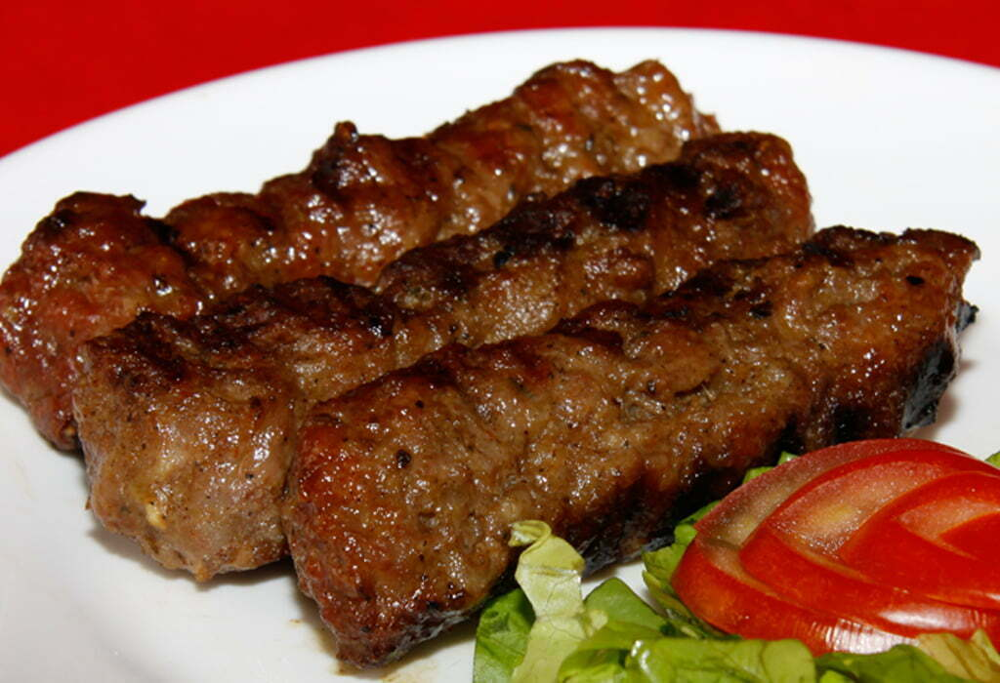

Mici

Description
Acești mici delicioși sunt perfecti pentru
o petrecere cu prietenii sau o zi de grătar în
familie. Poftă bună și spor!
- 500 g carne de miel
(sau carne de vită și porc în proporții egale)
- 500 g carne de porc
- 2-3 căței de usturoi, zdrobiți
- 2 lingurițe sare
- 50 ml apă rece
- Foi de plăcintă sau mălai pentru înfășurat
- Toacă carnea în bucăți mici
sau mărunte, iar apoi pune-o într-un bol mare.
- Adaugă apa rece peste amestecul de carne
și condimente și frământă
bine compoziția cu mâinile, până când se încorporează
toate ingredientele și se obține o masă omogenă.
- După ce compoziția a stat la frigider,
modelează micii. Ia câte o porție
din compoziție și modelează-o sub formă d
e mici, pe care le
poți rula între palme pentru a le da forma potrivită.
- Pune micii pe grill sau grătar
și lasă-i să se rumenească
frumos pe toate părțile, timp
de aproximativ 10-15 minute, sau până când sunt gata.
- Când sunt gata, scoate-i de pe
grill sau grătar și servește-i calzi,
alături de muștar, ketchup sau alte sosuri preferate.